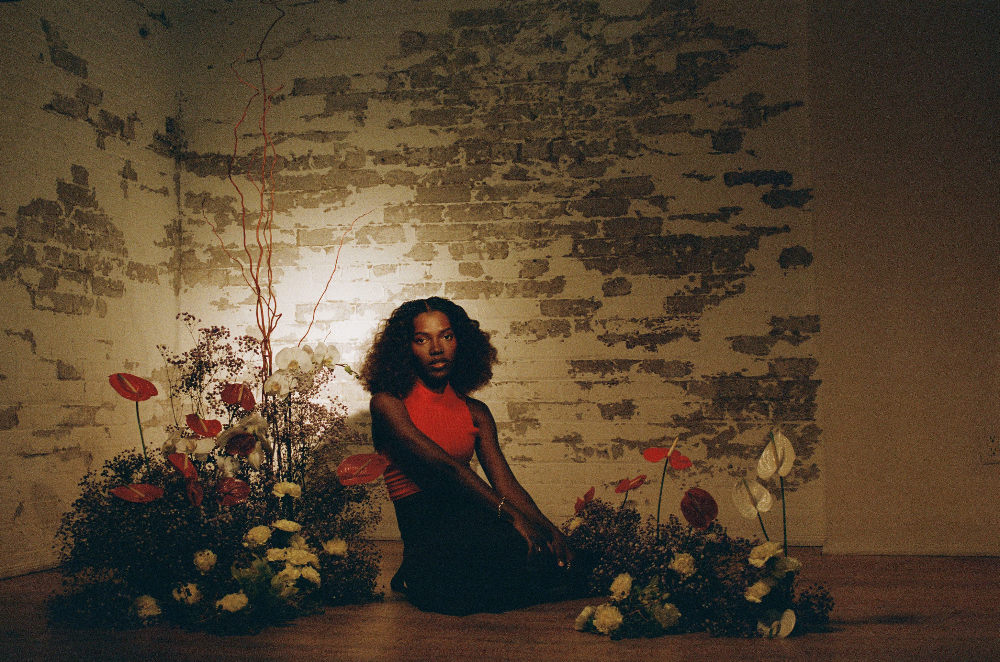

Eureka!

650CAD
54 x 35.8 in
Shot on film
2023
Eureka captures that exact moment of realization when something we've been
searching for
suddenly becomes
clear, even though it's been right in front of us the whole time. I was going through a period of confusion
and uncertainty, like an early quarter-life crisis, where nothing seemed to make sense. Riding city bikes
alone became my way of trying to make sense of it all.
Then, during one of those rides, I stumbled upon a bench surrounded by lavender. It was like a lightbulb
went off in my head. Not only did it inspire me to organize this shoot, but it also strangely gave me the
answers to all the questions that had been bothering me. Months later, as I brought the concept to life, I
realized that all the worries I had before were now in the past, like a tiny Gatorade bottle in the rear
view mirror